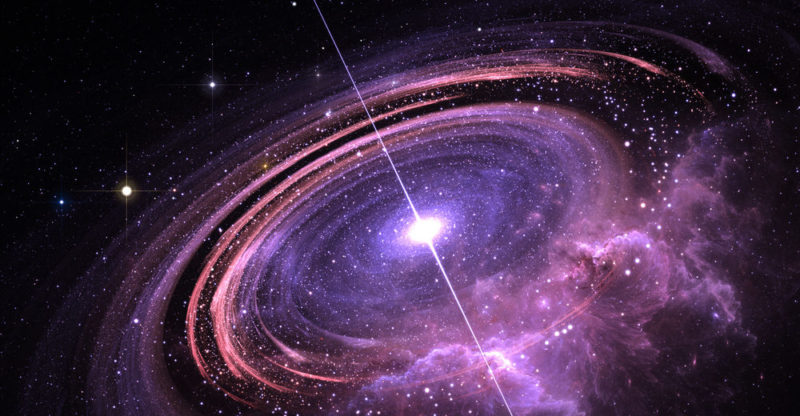

Es la idea de que el universo comenzó como un solo punto, luego se expandió y se estiró para crecer tanto como lo es ahora, ¡y todavía se está extendiendo!

Según la teoría del Big Bang, hace unos 13.800 millones de años, el universo, concentrado en un ínfimo y a su vez infinitamente pequeño punto que albergaba toda la materia, explotó para después enfriarse a medida que se expandía. Posteriormente, en el transcurso de esta expansión, se fueron desencadenando y encandenando a su vez, las reacciones que cocinaron las primeras estrellas, galaxias, y todo aquello que hoy vemos en el Universo.
No obstante, justo antes de que el Big Bang lanzara al Universo hacia su constante expansión, los físicos creen que existió otra fase aún más explosiva que precedió a ese universo primitivo que estaba a punto de florecer de manera abrupta. Los científicos se refieren a esta fase como la Inflación Cósmica, y afirman que duró menos de una billonésima de segundo. Durante este período que duró el instante de un instante, la materia, una masa fría y homogénea, se infló rápida y exponencialmente antes de encender la chispa que desencadenaría los procesos por los cuales, el Big Bang se encargó de expandir y diversificar -más lentamente- un universo recién nacido.
La teoría del Big Bang
18/11/2023 José David Sánchez García